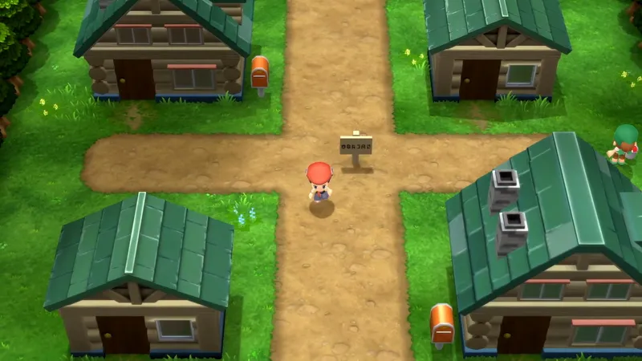
Pueblo Hojaverde
Un pueblo pequeño y tranquilo donde viven el protagonista y su amigo Israel. Aquí empieza el viaje.
Generación 4 · Diamante, Perla y Platino
Sinnoh está al norte de Kanto y Johto y se inspira en la isla de Hokkaidō, en Japón. Es una región fría, con nieve en el norte, y está dividida en dos por el Monte Corona, una gran montaña en el centro. Tiene tres lagos muy importantes: Veraz, Valor y Agudeza.
Pokémon Diamante y Pokémon Perla salieron en Japón en 2006 (en España, en 2007). Trajeron 107 Pokémon nuevos, los combates por Wi-Fi y la división de los movimientos en físicos y especiales. Después llegó Platino, en 2008 (en España, en 2009), y en 2021 los remakes Diamante Brillante y Perla Reluciente.
El protagonista vive en Pueblo Hojaverde con su amigo Israel. Un día, unos Starly salvajes les atacan en el Lago Veraz y, para defenderse, abren el maletín del Profesor Serbal y eligen un Pokémon. El profesor les deja quedárselo y empiezan su viaje: tienen que conseguir las ocho medallas de Sinnoh, vencer a la Liga y parar al Equipo Galaxia.


Un pueblo pequeño y tranquilo donde viven el protagonista y su amigo Israel. Aquí empieza el viaje.
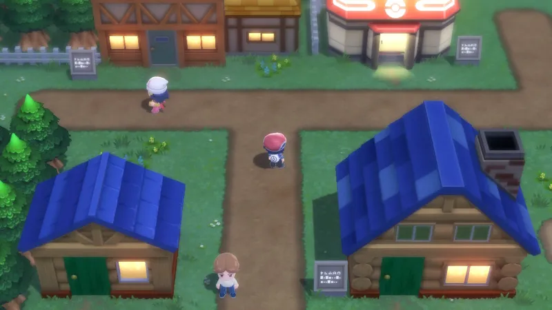
Un pueblo junto al mar donde está el laboratorio del Profesor Serbal, el investigador más importante de Sinnoh.
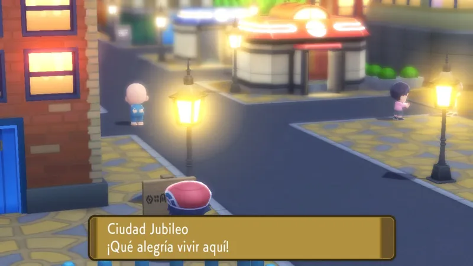
Una ciudad grande y moderna. Aquí te dan el Pokétch, un reloj que se puede llevar en la muñeca y que sirve para muchas cosas.
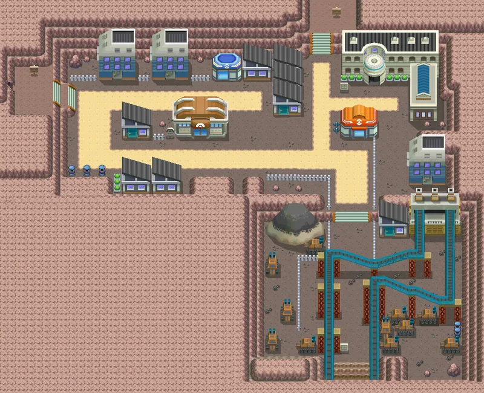
Una ciudad minera. Se vive del carbón y de los fósiles que se encuentran en sus minas.
Gimnasio: Roca
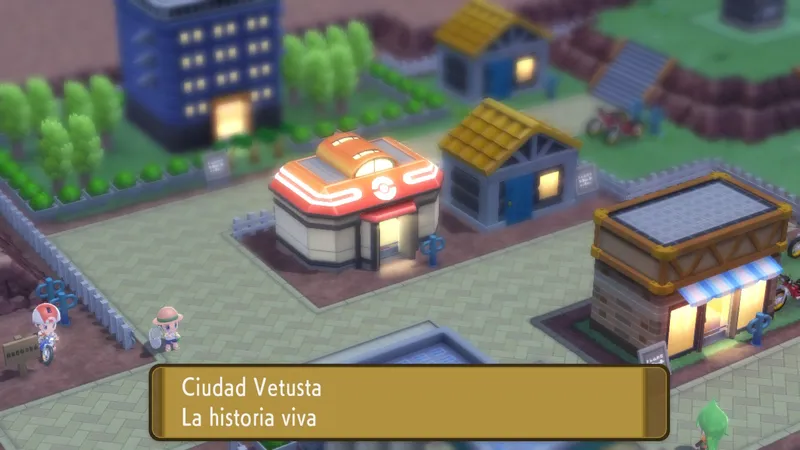
Una ciudad antigua, con una estatua muy vieja en el centro y un bosque a su lado. Aquí tiene un edificio el Equipo Galaxia.
Gimnasio: Planta
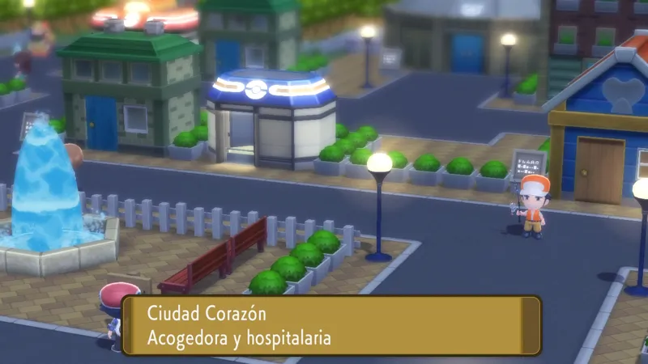
Una ciudad elegante donde se celebran los concursos Pokémon. Su líder usa Pokémon de tipo Fantasma.
Gimnasio: Fantasma
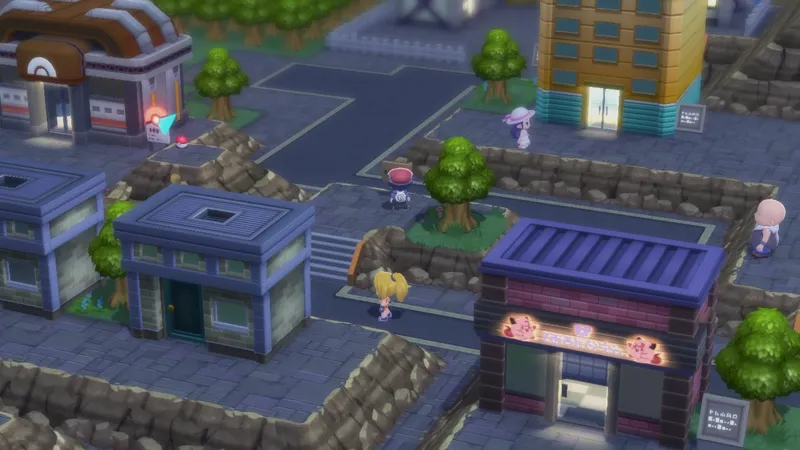
Una de las ciudades más grandes de Sinnoh, con un casino y un enorme edificio: la sede del Equipo Galaxia.
Gimnasio: Lucha
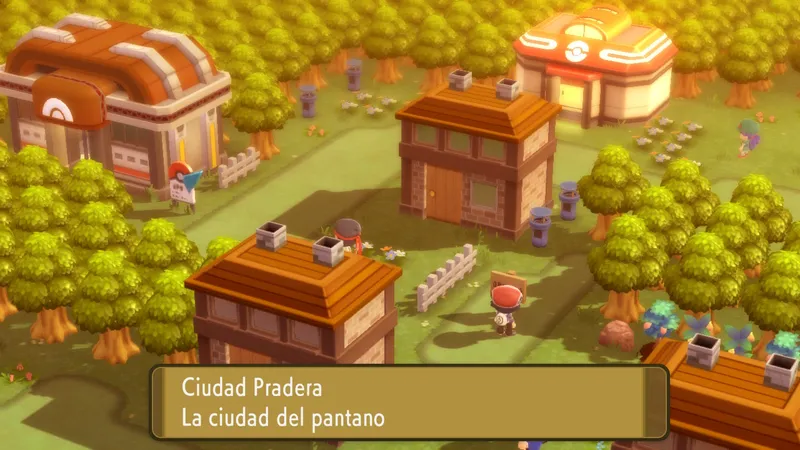
Una ciudad con casas sobre el agua, al lado del Gran Pantano, un lugar lleno de barro y de Pokémon que solo viven allí.
Gimnasio: Agua
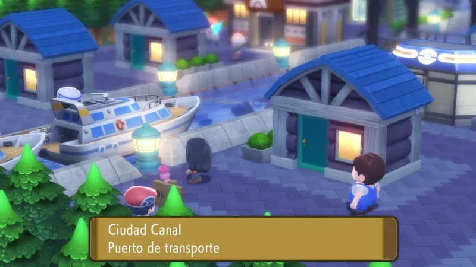
Un puerto con una gran biblioteca. Desde aquí salen los barcos que cruzan el mar.
Gimnasio: Acero
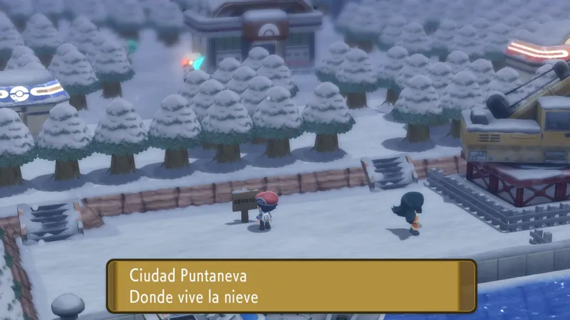
Una ciudad en el norte donde siempre nieva. Las casas están cubiertas por la nieve y casi no se ve a nadie por la calle.
Gimnasio: Hielo
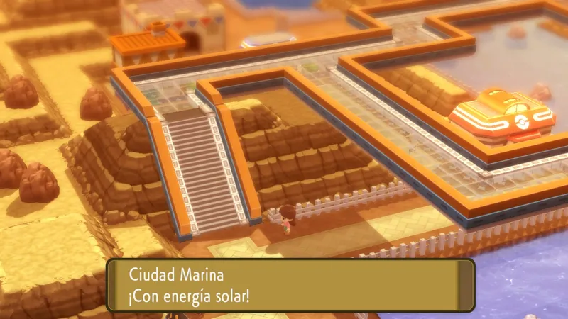
La ciudad más soleada de Sinnoh. Usa paneles solares para tener electricidad y su faro vigila el mar.
Gimnasio: Eléctrico
Pulsa en un Pokémon para verlo en grande.
Acero Dragón
El Pokémon del tiempo. Controla el tiempo y puede detenerlo. Es el legendario de Diamante y de Diamante Brillante.
Agua Dragón
El Pokémon del espacio. Puede distorsionar el espacio. Es el legendario de Perla y de Perla Reluciente.
Fantasma Dragón
Un Pokémon muy temido que vive en el Mundo Distorsión, un lugar donde no funcionan las reglas normales. Es el legendario de Platino.
Normal
El Pokémon que, según los mitos, creó el universo. Dicen que de él nacieron Dialga, Palkia y Giratina.
Psíquico
El Pokémon del conocimiento. Vive en el Lago Agudeza y dicen que, si abre los ojos, borra los recuerdos de quien le mira.
Psíquico
El Pokémon de las emociones. Vive en el Lago Veraz y dicen que enseñó a la gente a sentir tristeza y alegría.
Psíquico
El Pokémon de la voluntad. Vive en el Lago Valor y dicen que dio a la gente la fuerza para esforzarse.
El Equipo Galaxia dice que quiere ayudar al mundo, pero en realidad quiere destruirlo y crear uno nuevo. Para conseguirlo, necesita el poder de los Pokémon legendarios de los tres lagos y de Dialga y Palkia.
Son científicos, como Plutón, y no se esconden: hasta anuncian por televisión que reúnen Pokémon. Sus miembros llevan un uniforme gris y un pelo de color muy llamativo.
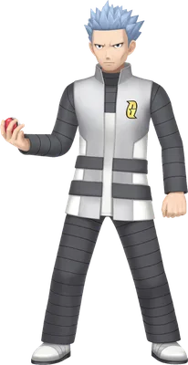
Líder del Equipo Galaxia
Un hombre frío y muy inteligente. No cree en los sentimientos, y por eso quiere un mundo nuevo sin ellos.
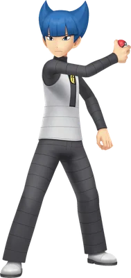
Comandante. Es la mano derecha de Helio y el más fuerte de todos.
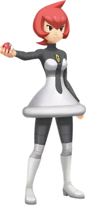
Comandante. Es la primera a la que te enfrentas; parece débil pero se hace muy fuerte.
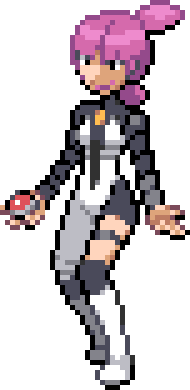
Comandante. Es la segunda en el mando y aparece varias veces durante el viaje.
Los ocho gimnasios de Sinnoh, en el orden normal del viaje.
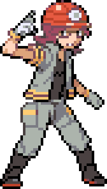
Ciudad Pirita
Roca · Medalla Lignito
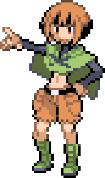
Ciudad Vetusta
Planta · Medalla Bosque
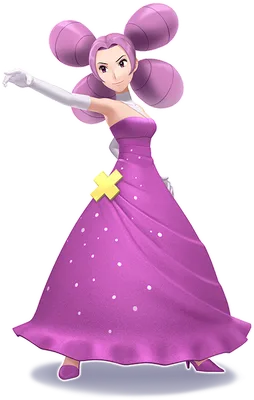
Ciudad Corazón
Fantasma · Medalla Reliquia
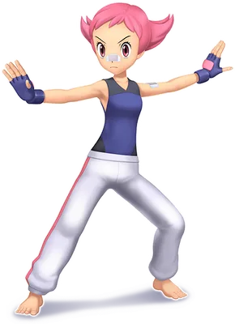
Ciudad Rocavelo
Lucha · Medalla Adoquín
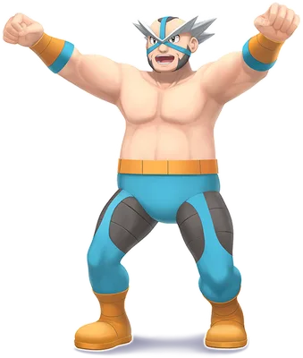
Ciudad Pradera
Agua · Medalla Ciénaga
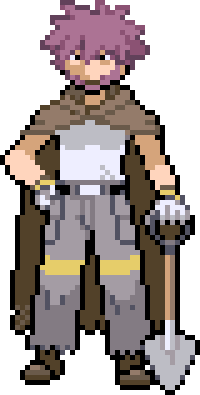
Ciudad Canal
Acero · Medalla Mina
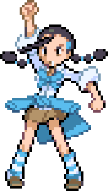
Ciudad Puntaneva
Hielo · Medalla Carámbano
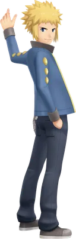
Ciudad Marina
Eléctrico · Medalla Faro
La Liga está en una isla al noreste de Sinnoh y su edificio parece una catedral. Hay que tener las ocho medallas y cruzar la Calle Victoria. Primero se vence al Alto Mando y, por último, a la Campeona.
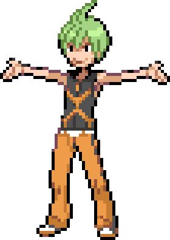
Alto Mando
Bicho
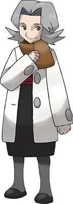
Alto Mando
Tierra
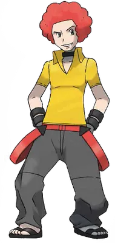
Alto Mando
Fuego
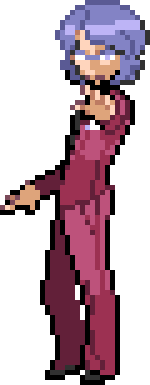
Alto Mando
Psíquico
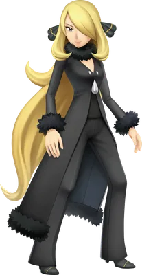
Campeona
La mejor entrenadora de Sinnoh. Le encanta investigar los mitos de la región y aparece varias veces durante el viaje para ayudarte.
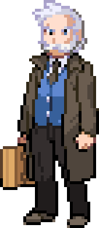
El investigador más importante de Sinnoh. Estudia cómo evolucionan los Pokémon y te deja quedarte con tu primer Pokémon después del incidente en el Lago Veraz.
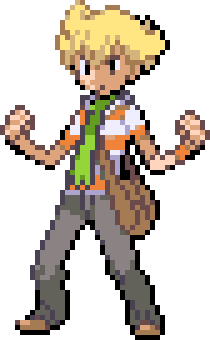
Tu amigo y rival. Es impaciente y siempre tiene prisa. Quiere ser el mejor entrenador y te reta cada vez que os encontráis.
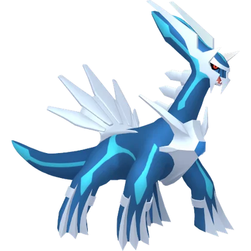
Dialga
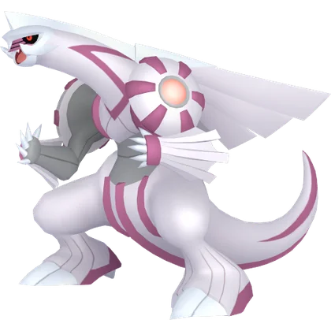
Palkia
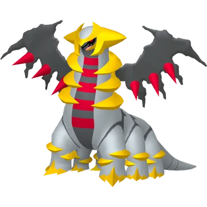
Giratina
Arceus
Uxie
Mesprit
Azelf
Rampardos
Roserade
Mismagius

Lucario
Floatzel
Bastiodon

Abomasnow
Luxray
Drapion
Hippowdon

Infernape
Gallade
Garchomp